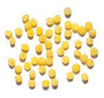

Tipos de pastas

Se le denomina Pasta o Pasta alimentaria a un alimento a base de harina o semolina con formas regulares diferentes y cuya coccion se realiza con calor húmedo. Tambien se suele utilizar el termino Pasta para indicar un plato donde la esta sea el ingrediente principal, con una salsa, salsa u otro condimento.
La palabra viene del griego πάστα, con el significado de "salsa con harina". El origen de la pasta se remonta hasta el Neolítico (alrededor de 8000 aC), cuando los seres humanos comenzaron el cultivo de cereales y pronto aprendieron a moler, mezclar con agua y cocinar o mantenerlas secas al sol durante mucho tiempo. La pasta es de hecho un alimento universal del que son vestigios históricos en todo el continente euroasiático (China e Italia). Adquiere una especial importancia en Italia donde es toda una tradición culinaria de prestigio pero de la cual es dificil conocer su verdadero origen debido a complejidad de los caminos intermedios.
Cuenta la leyenda qué fue Marco Polo, a su regreso de China en 1295 quien introdujo en Occidente, la pasta como actualmente la conocemos. Esta leyenda nació en Estados Unidos y no es compartida por la gran mayoria de los italianos quienes dicen que esto es solo un mito. Sea cual se el origen todos sabemos y estamos de acuerdo que la pasta es una comida 100% tipica de Italia
| Nombre | Imagen | Descripcion |
| AlfaBeto | Pasta con forma de letra ideal para sopas | |
| Anchellini |  | Pasta finamente cortada, adecuadas para sopas vegetales o sopas ligeras, muy paracida al coscous |
| Anelli Siciliani | Pasta firmemente cortada con forma de anillos grandes, adecuada para sopas y ensaladas |